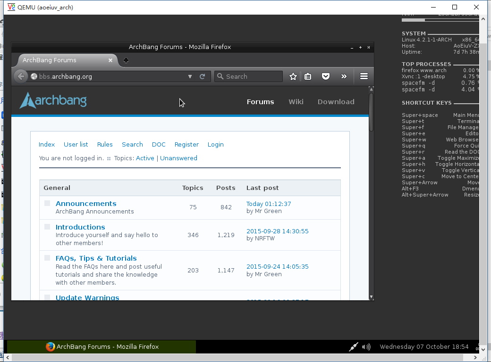

VNC，Windows下利用VNCviewer，通过VNC远程控制Linux，Linux通常不用VNC远程控制，因为传输图像的数据量就比较大了，对网速的要求就比较大了，网速不够的话，控制起来就是卡卡的，所以我手头上的vps并没有搭VNC服务，也没有图形界面，下面用来测试的是在学校一个服务器上建的虚拟机，这虚拟机我是用来挂着vpn服务器的，平时有人用，所以不能乱搞，通过vnc远程控制这个虚拟机，有两种不同的情况，但是有一点，多人登陆的话，看到的控制的，都是一样的，下面如果需要帐号密码，都是aoeiuv第一个，虚拟机本身提供的vnc服务，是真的像显示器一样能看到这个系统，包括开关机画面什么的，都能看到，地址是180.209.64.41，端口是15900。


这样就能看到桌面了，而且这不是丑，这叫简洁，这个桌面是openbox，还有其他很多种华丽的桌面，Linux这个换桌面环境和Windows换主题是完全不一样的，不同桌面环境看上去是天差地别的。
第二个，Linux上运行一个vnc服务端程序，地址是180.209.64.41，端口是15901，这样和vnc依赖这个服务端程序，通常只是提供一个桌面环境的入口，连接进来就是桌面。

VNC看看就行了，主要还是用SSH，Linux毕竟还是用字符界面，还有个叫“实验楼”的自学网站，有提供实践环境，随便选个免费课程就会提供个一小时的Linux，直接就是在网页上通过vnc控制的，可以注册试试。